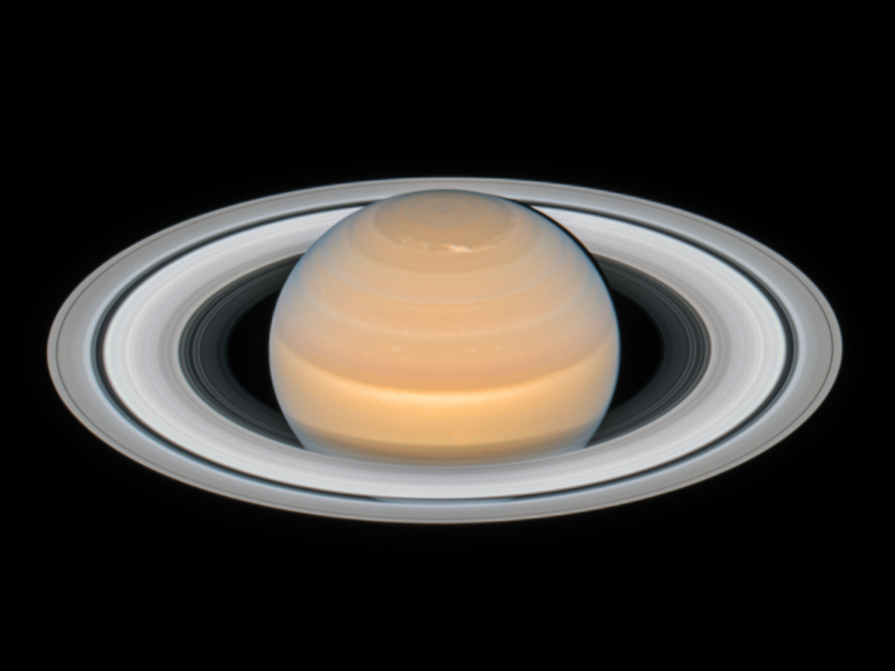

Rotation
Saturn spins extremely fast, completing a roation in 10 hours and 34 minutes, the second shortest day in our solar system.
Saturn has oval shaped storms and hexagon cloud pattern at its north pole.
Saturn is the second-largest planet in our solar system.

Saturn spins extremely fast, completing a roation in 10 hours and 34 minutes, the second shortest day in our solar system.
Saturn has 142 confirmed moons, one of them being Titan, which has lakes of methane.
Saturn is the sixth planet from the sun.